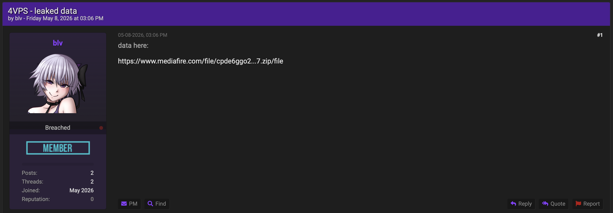
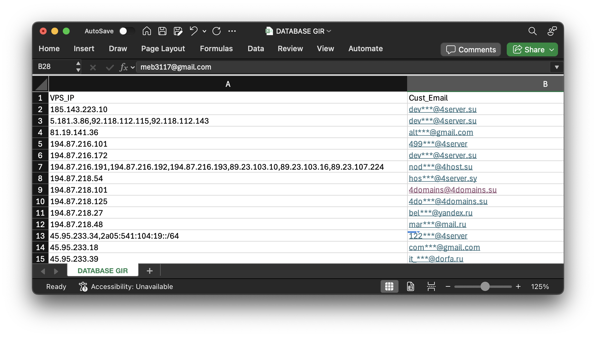
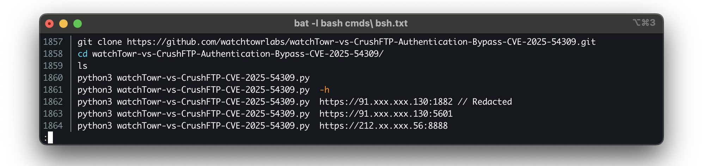
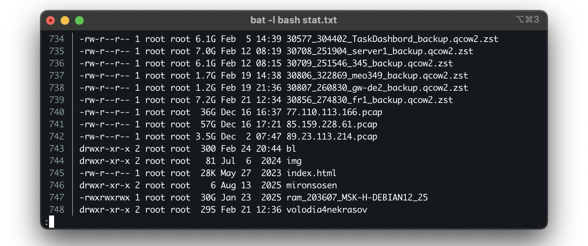
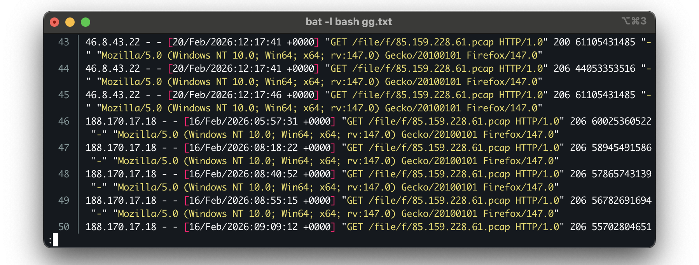

Summary: The leaked internal data of 4vps.su, a Russian-market VPS provider that also operates under the GIR brand, reveals a customer base that defies simple political narratives. The platform hosts the proxy infrastructure of friGate, a service used to access websites blocked in Russia, while also hosting an operator whose activity is overwhelmingly directed at Russian and CIS networks. At the same time, 4VPS has been publicly endorsed by a ransomware group as a trusted provider. This post reconstructs the company’s customer base and reseller ecosystem to explain how these tenants coexist without requiring a shared political or operational alignment. The dataset is best explained by non-interference as a commercial service. Once that is understood, the apparent contradictions disappear. Customers on opposite sides of geopolitical, criminal, or ideological divides can share the same platform so long as they remain paying customers. The broader implication is that governance efforts aimed at who a provider is or where it operates may miss what actually makes such hosts valuable: their willingness not to act.
In early May 2026, hosting provider 4vps.su disclosed a breach of its infrastructure. The data was later offered for sale by a user called blv for USD 20,000 in Bitcoin on PwnForums. Later that day, a post in the same style advertised a second leak relating to the Gentlemen ransomware group for USD 10,000 in Bitcoin, after which portions of both datasets were made publicly available. 4vps.su is a Russian-market VPS and RDP provider operating in the abuse-tolerant segment of the hosting market. Alongside its public storefront and social media presence, the provider has long been associated with a customer base involved in cybercrime. The company also operates under the GIR (gir.network) brand. Data contained in the breach indicates that 4VPS and GIR are two brands of the same underlying operation, with shared infrastructure, service accounts, and customer records spanning both domains.
The dataset that came out of the breach is, while likely only a sample, unusually layered. It contains the provider’s customer database, the working directories of several co-resident operators, the access logs of the provider’s own backup distribution node, and, as mentioned and disclosed separately, the internal chat of the Gentlemen ransomware operation that rented infrastructure on the platform. I have written before about data leaks originating from bulletproof hosting operations, but this post argues about something the Media Land leak did not demonstrate: political indifference of the hoster and this lack of politics being a selling point.
Three observations make the point, and they only look like a paradox if you expect Russian-market hosting providers to have a side.

Figure 1: PwnForums post of user blv offering the 4vps.su leak for sale.One platform, many tenants
If account-level detail is not your thing, you can skim this section and pick up at “Not the customer you would expect”, where the argument resumes.
The customer table is the spine of the leak. After expanding and deduplicating the individual rows, it describes 47,878 entries across 23,865 unique customer addresses, originating overwhelmingly from the Eastern-European ranges that characterise this segment of the market, assigned at /24 granularity across roughly 205 mostly-full /24s (253 out of 256), alongside two IPv6 /32s (2a05:541::/32 and 2a00:b703::/32). Most of the IP space relates back to GLOBAL CONNECTIVITY SOLUTIONS LLP. The table below displays the consumption of addresses. The email addresses show no meaningful signal in relation to customers, though most email addresses are free webmail and privacy mail. The structure of the base, however, is steeply concentrated.

Figure 2: Redacted screenshot of the database file.The long tail here is ordinary. Seven out of ten accounts hold a single machine. The structurally relevant part is the top of the distribution. Eight accounts hold a tenth of the entire address space, and forty-two accounts hold fifty machines or more. These accounts are consistent with reseller-style usage patterns. Their holdings are unusually large, and the server labels in the stat.txt such as Eva_RU_02 and Eva_GBR_04 suggest segmentation patterns typical of downstream provisioning rather than end-user deployment. This assumes that these labels belong to a reseller-like account in the dump, eva***@gmail.com, who holds 785 unique addresses according to the database. The concentration is important because it suggests that a meaningful portion of the platform may have been operated through intermediaries rather than direct end users. If these accounts functioned as resellers, 4VPS occupied a position further upstream in the ecosystem, supplying infrastructure that was subsequently redistributed to other customers. This introduces an additional layer between the provider and the eventual tenants and may help explain some of the diversity observed elsewhere in the dataset. Under such a model, the composition of the customer base reflects not only the provider’s decisions, but also those of downstream operators provisioning infrastructure to their own users.
Table 1: Concentration of the 4vps.su customer base by address holdings |— | Tier (VPS held) | Accounts | Share of accounts | VPS held | Share of address space |:-|-:|-:|-:|-: | 1 | 16,690 | 69.9% | 16,690 | 34.9% | 2 to 9 | 6,827 | 28.6% | 17,617 | 36.8% | 10 to 49 | 306 | 1.3% | 5,769 | 12.0% | 50 to 199 | 34 | 0.1% | 3,007 | 6.3% | 200 or more | 8 | 0.03% | 4,795 | 10.0% |—
The fifth row of Listing 2 is the one worth paying attention to. The fifth-largest customer on this platform consists of infrastructure of a proxy service that was previously known in Russia for being a censorship-circumvention tool called friGate. It seems to have been provisioned through the same billing system as the provider’s internal accounts and reseller infrastructure, and appears no different from any other customer on the platform. The next two sections examine why that matters, and what else is sharing the same environment.
Table 2: Selected accounts from the reseller tier. |— | VPS | Account (partially redacted) | Reading |-:|:-|:- | 1,564 | sig***@gmail.com | Largest single tenant | 785 | eva***@gmail.com | Geo-distributed reseller | 607 | 4vp***@gmail.com | Insider account | 547 | bor***@mail.ru | Heavy tenant | 493 | add***@fri-gate.org | Large-scale proxy infrastructure | 297 | dev***@mogotech.net | Heavy tenant |—
Not the customer you would expect
Now the underlying legal registrations for 4VPS and GIR, Global Internet Solutions LLC and Global Connectivity Solutions LLP, both documented by Qurium to be related to an individual called Marinko Evgeni Valentinovich, are by now registered in the Seychelles. However, eSentire documented GIS/GIR as being registered in Russia before and most (if not all) of its prefixes seem to originate from Russia. The conventional image of a Russian-market bulletproof hoster assumes an informal arrangement with the local environment. Avoid harming domestic targets, and enjoy a degree of tolerance in return. If that arrangement were doing work at the hosting layer, the hoster would be expected to avoid tenants whose activity runs against Russian interests. At least two tenants in this dataset run against those interests, in different ways, and the host carries both.
The first is the add***@fri-gate.org account, holding 493 addresses across 59 /24s. The domain belongs to friGate, a browser proxy extension. friGate is advertised and used as a way to reach websites blocked in Russia, administrered by Roskomnadzor (Роскомнадзор), and it shipped with a default list of blocked destinations dominated by torrent trackers, betting sites, and streaming portals. While friGate is not a principled anti-censorship project, its developer explicitly frames it neutrally as access to blocked sites and seems to target mostly piracy and gamling rather than political content. It is ad-supported, and the Chrome extension was removed from the Web Store over malware issues. What it is, in function, is block-evasion infrastructure, a category of service targeted by Russia’s 2017 “anonymizers law” (Federal Law No. 276-FZ), which requires VPNs, proxy services, and other circumvention technologies to enforce Roskomnadzor’s blacklist rather than provide access to blocked sources. As it seems, friGate appears to have publicly advertised the opposite. On that basis, which is an inference from function rather than documented political intent, the friGate infrastructure sits awkwardly with the idea of a host aligned with or protected by its own jurisdiction.
The second tenant is one of the co-resident operator directories included in the dump and belongs to an actor whose target list is exclusively Russian and Commonwealth of Independent States (CIS) infrastructure. It shows exploitation activity on a list of 1370 Russian telecom-related IP addresses and domains with heavy reliance on public Proof of Concepts (PoCs) for CVEs, such as CVE-2026-0770 (Langflow), CVE-2026-21962 (Oracle HTTP Server), CVE-2026-24061 (GNU InetUtils) and older ones such as the CrushFTP PoC published by watchTowr for CVE-2025-54309 and others dating back to vulnerabilities from 2019. This is the more direct contradiction, and it does not rely on inference. Attacking Russian infrastructure contradicts the supposed mutual understanding that seems to be common among Russian cyber criminality.
Neither tenant fits the profile one might expect from a provider commonly associated with the Russian abuse-tolerant hosting ecosystem. One operates as a service the Russian state legislates against. The other attacks targets inside the state’s own borders.

Figure 3:.bash_history from one of the hosts targeting Russian systems.
A verified provider
The third tenant relevant here is a ransomware operation whose internal chat was leaked separately. The group, called Gentlemen, was allegedly renting infrastructure on 4vps.su and its leak has been extensively documented by now. In January 2026, the group explicitly mentions 4vps.su in a vetted list of providers for self-hosted VPN and related needs (alongside JustHost.asia, ishosting.com, cp.inferno.name, and 4dedic.io) and 4vps.su appears on it marked as verified. In March, another member writes that he rents on 4vps.su and runs self-hosted AmneziaVPN there.
The group does not seem to run its attacks from the platform, but did acknowledge later that they run parts of their infrastructure on 4vps.su and that attackers got their hands on NAS-credentials. These NAS-credentials can also be found in the leak of the chats, indicating that they were using at least VPN services, NAS, and the RocketChat instance from which the chats leaked. The IP address of the NAS server (193.228.128.2), however, is associated with an account that holds 106 addresses (192***@protonmail.com). When referencing the IP addresses with this account in passive DNS and threat intelligence sources like VirusTotal, the activity on these addresses seems unrelated and not explicitly marked as malicious. This suggests that the person or organization behind the account 192***@protonmail.com could again be a reseller. However, whether the account is a reseller remains unclear for now, as the chats explicitly name 4vps.su as a verified hoster, resulting in questions about their verification process and where the information required for this process came from.
СLEAR PASS Z?51w>vh
[nas]
type = sftp
host = 193.228.128.2
user = d0wnloAd1
port = 2222
pass = B1VbeIK7SlZkOR7ZatyD6KMJe4uNSp_H
shell_type = unix
md5sum_command = none
sha1sum_command = none
Listing 1: NAS credentials found in the Gentlemen leak.
The 4vps retention policy
The provider’s backup distribution node primarily served customer virtual-machine disk images, which is exactly what one would expect from a hosting provider. Mixed in with those backups, however, were a small number of artifacts that fall outside routine snapshot retention: three packet captures ranging from 3.5 to 57 gigabytes and a 30-gigabyte memory image of a virtual machine named ram_203607_MSK-H-DEBIAN12_25 (described in stat.txt of the dump). The packet captures were stored on the same distribution infrastructure as customer backups and can be linked through the leaked records to specific customer accounts: sam***@tutamail.com (193.233.48.146), vad***@proton.me (89.23.113.214), ash***0@tutamail.com (85.159.228.61), and oll***@tutamail.com (77.110.113.166), all made in December 2025.
This should not be over-read. The evidence does not support a claim of blanket monitoring across the customer base, nor does it establish why these particular tenants were selected. The captures and memory image are exceptional precisely because so few appear among the much larger collection of ordinary backups. The significance is not that monitoring occurred, but that the provider demonstrably possessed the ability to inspect customer systems while generally choosing not to interfere with how those systems were used. Whatever their original purpose, the artifacts were included in the same retrieval set as customer backup material.

Figure 4: Contents of the file system showing PCAP files for specific hosts.Who took the data
The breach is visible in the host’s own access logs. The bulk of the exfiltrated material, including multi-gigabyte packet captures and disk images, was downloaded by two IP addresses, 188.170.17.18 and 46.8.43.22. The logs show repeated HTTP range requests and resumed transfers of the same files, a pattern consistent with the deliberate downloading of large datasets rather than casual browsing or automated indexing. These two addresses account for the majority of the observed download activity. A smaller number of retrievals originated from Tor exit nodes and other transient infrastructure.
The observed origin should not be over-interpreted. The two Russian IP addresses are related to the majority of the download activity, and the operators did not consistently attempt to conceal that fact. This could have a variety of explanations such as a domestic actor, a competing criminal group, an insider, an extortion-motivated actor, or a politically motivated actor. The available evidence does currently not allow for reliable attribution to any specific individual, organization, or state entity.

Figure 5: 4vps.su logging showing the download activity from two Russian IP addresses.Why the contradictions are only apparent
Set the observations together. A proxy service that publicly facilitates access to websites blocked in Russia. An operator targeting Russian and CIS infrastructure. A ransomware group that regarded the provider as trustworthy enough to host parts of its own infrastructure. These look like contradictions only if the host is assumed to have a political position, and the dataset gives little reason to make that assumption.
Read structurally, the friGate infrastructure, the CIS-targeting operator, and the ransomware group’s self-hosted services are the same kind of fact. They are tenants sharing a platform whose apparent value lies in its willingness not to interfere with how customers use the infrastructure it provides. That willingness appears largely content-blind. Customers who would sit on opposite sides of political, criminal, or geopolitical divides can therefore coexist on the same platform without friction, because alignment between tenants is not a prerequisite for service.
The retention artifacts provide an important qualification. The packet captures and memory image demonstrate that the provider possessed the technical capability to inspect customer systems when it chose to do so. The significance is therefore not that intervention was impossible, but that it appears selective rather than routine. Non-interference was a choice, not a limitation.
Viewed in that light, the apparent contradictions largely disappear. The evidence does not suggest a provider enforcing a particular political orientation among its customers. Instead, it suggests a commercial service whose primary value proposition is a reluctance to become involved in customer activity. Whether that activity serves censorship circumvention, criminal operations, attacks against Russian networks, or something else entirely appears, at least in many cases, to be secondary to maintaining the customer relationship.
Why this matters
The retention artifacts described earlier reinforce this point. The packet captures and memory image demonstrate that the provider possessed the capability to inspect customer systems when it chose to do so. The significance is therefore not that intervention was impossible, but that it appears to have been selective rather than routine.
Trying to address this solely through jurisdiction is also difficult because this form of non-interference is not unique to any one legal system. The same business model can emerge wherever there is demand for providers willing to minimise scrutiny of customer activity. The tenants described here already illustrate uses that do not align neatly with a single political, legal, or ideological position. Framing the question as “whose side the host is on” may therefore be misleading. The evidence suggests that taking sides is not central to how the service operates.
This observation also challenges a common assumption about Russian-market bulletproof hosting. Such providers are often analysed primarily as criminal organisations operating in alignment with Russian strategic interests. While that may be true in some cases, the customer ecosystem observed here is difficult to explain through political alignment alone. Alongside infrastructure associated with criminal activity, the dataset contains services aimed at bypassing Russian censorship, actors targeting CIS organisations, and customers whose interests appear unrelated to any coherent geopolitical project. The reseller activity observed in the dataset further complicates any attempt to infer a coherent political position from the customer base, as a significant portion of the infrastructure may have been allocated through intermediaries rather than directly to end users. The common denominator is not political affiliation but a willingness to pay for infrastructure that imposes few constraints on how it is used.
What remains critical is that the host still depends on being reachable. Even a provider that sells non-interference needs upstream networks, transit providers, and peers to carry its traffic. That is where leverage exists. Those networks can make decisions about what they carry and what they do not. The host itself may have little interest in choosing between customers, but its upstream providers do not necessarily share that position.
The broader implication is that what appears to be political contradiction may simply be the result of a business model built around selective non-interference. Customers with fundamentally different interests can coexist because the service being sold is not a political project but a promise of limited intervention. Viewed from one angle, that characteristic appears as abuse tolerance. Viewed from another, it appears as political neutrality. The two are not separate explanations. They are the same property seen from different sides.